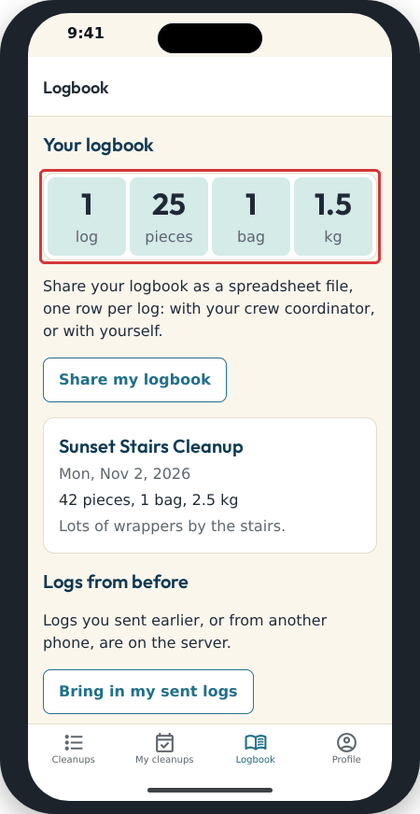

React Native & Expo · Part 3 · Session 18 of 26 · 3 hours
Session 18
Animation and Gestures
Numbers that count on the UI thread, a card that follows your finger, and another way for everyone.
Today
Three hours, two lessons
| 0:00 | Welcome to Part 3: refresher and catch-up check |
| 0:25 | 7.1 Animation with Reanimated 4: model, demo, lab, project |
| 1:30 | Break (10 min) |
| 1:40 | 7.2 Gestures: model, demo, lab, project |
| 2:50 | Exit ticket, homework, what to bring next time |
LABS Lab files are in
labs/module-18. Work in starter/, never the solution.Welcome · Part 3
Motion, quality and shipping
- Sessions 18 to 26: motion, gestures, accessibility, tests, performance, builds, the stores
- Today: the app starts to move, and a card follows your finger
- Starting here? You get the same code: the end of Lesson 6.5
- Every phone claim today is checked on YOUR phone at home
Opening · 10 minutes
Refresher: from memory
- Where does a log saved with no signal wait, and what sends it?
- When does
useFocusEffectrun, compared withuseEffect? - What does
createThemedStylesgive a component? - What does FlashList do with a row that scrolls away?
WHY No notes. Write first, then compare with a neighbor.
Opening · 12 minutes
Starting with Part 3: the catch-up check
- Unzip
lesson-25-start.zipinto a NEW course folder shoreline-crew: .env.example → .env.local, thennpm ci- Terminal 1:
node server.tsinshoreline-api node labs/module-18/l7_0-catch-up/check_environment.mjs→ READY
TRIAGE
has no packages yet = npm ci was not run.Opening · the kit's run
Right after unzipping, and after the README
FIX shoreline-crew has no packages yet: cd shoreline-crew, then npm install NOT READY: fix the FIX lines above, then run this check again READY for React Native & Expo: Build and Ship a Mobile App
WHY Same download, one command apart: npm ci.
7.1
Animation with Reanimated 4
React sets the destination once; the UI thread steers every frame.
7.1 · Frame
Two threads, one frame
- JavaScript thread: React, TanStack Query, the queue, JSON
- UI thread: lays out, draws, reads touches
- 60 frames a second = 16.7 ms each (120: 8.3)
- setState per frame = only as smooth as the busiest thing in JavaScript
7.1 · Mental model
The skipper and the helm
- React (the skipper): "count to 44 in 900 ms", once
- The UI thread (the helm): every frame, no questions
scheduleOnRN: the helm calling out to the skipper, rarely- Shared values:
get()andset(), never while rendering
MODEL Worklets run on the UI thread; Expo's Babel preset makes them for you.
7.1 · The tools
Timing or spring?
withTiming: lands exactly, on time: numbers, bars, opacitywithSpring: moves like an object, may overshoot: the bouncewithSequence·withDelay·withRepeat: chains- CSS-style: transitionProperty (a change), animationName (a loop)
TRAP A spring on a number showed 49, then 41, before 42 (measured).
7.1 · The code
The count, the reaction, the bounce
shoreline-crew/src/components/Tally.tsx
useAnimatedReaction(
() => Math.round(count.get() * steps),
(step, previous) => {
if (step !== previous) {
scheduleOnRN(setShown, step / steps);
}
},
);
WHY React hears one number per whole step, not one per frame.
7.1 · Live demo
Caught mid-count

7.1 · Live demo
What the template already installed
npm ls react-native-reanimated react-native-worklets
shoreline-crew@1.0.0 ~/shoreline/shoreline-crew ├─┬ @expo/ui@58.0.28 ... ├─┬ react-native-reanimated@4.7.1 │ └── react-native-worklets@0.13.0 deduped └── react-native-worklets@0.13.0
WHY The lesson's card, word for word. deduped = one shared copy.
7.1 · Live demo
The .value habit, for real
npx expo lint
~/shoreline/shoreline-crew/src/components/Tally.tsx
63:7 error Error: This value cannot be modified
> 63 | count.value = withTiming(value, counted, (finished) => {
| ^^^^^ `count` cannot be modified
... react-hooks/immutability
✖ 1 problem (1 error, 0 warnings)
LINT tsc printed nothing. get() and set() fix it.
7.1 · Reduce Motion
Who steps aside by itself?
- withTiming / withSpring / withSequence: jump to the end
- CSS-style transitions and keyframes: keep moving (measured)
- So:
useReducedMotion()for those, and you decide - Read once, at start: restart the app (reload the web preview)
WHY A fade in place is a gentle substitute: the tally keeps its highlight.
7.1 · Where the web preview lies
A setter called from a worklet
[Worklets] Tried to synchronously call a Remote Function. Called "…" on the UI Runtime.
PHONE Works in the web preview (one thread). On a phone, per the library's code: this. scheduleOnRN.
7.1 · Guided lab · 20 minutes
A bar, a dot, a counter
labs/module-18/l7_1-animation-with-reanimated-4/starter- Task 1: a bar that glides (clamp, then a transition)
- Task 2: a dot that holds still for Reduce Motion, hidden from screen readers
- Done:
8 passed, typecheck and lint silent
MORE Task 3 goes home: .value and a spring on a number.
7.1 · Guided lab
As shipped, and when done
Tests: 5 failed, 3 passed, 8 total 31 | return ( react-hooks/immutability Tests: 8 passed, 8 total
7.1 · Project · 20 minutes
A Tally That Counts: Steps 1 to 3
npm ls react-native-reanimated react-native-workletssrc/components/Tally.tsx: one reads the comments, one types- Four tallies replace the totals sentence;
tenths() npx tsc --noEmit: clean
HOME Steps 4 to 7 go home, including Reduce Motion on your phone.
Break
10 minutes
Find Reduce Motion in your phone's Settings (do not switch it on yet).
7.2
Gestures
The finger drives, a spring finishes, and a button does the same.
7.2 · Mental model
The deckhand on the line
- Gesture Handler feels every tug on the UI thread
- Callbacks are worklets: shared values follow the finger
- React (the skipper) only hears "swiped": scheduleOnRN
- One GestureHandlerRootView, flex: 1, around the whole app
MODEL Pressable's responder system decides in JavaScript: fine for a press, not for a drag.
7.2 · Frame
The life of a swipe
- Finger down on a card: which way first?
- 10 points up or down: a scroll (
failOffsetY) - 12 points sideways: a swipe (
activeOffsetX), the card follows - Let go: far (120) or fast (800 pt/s)? Spring back and ask; else spring back
7.2 · The code
SwipeToRemove's pan: when it may start
shoreline-crew/src/components/SwipeToRemove.tsx
const pan = usePanGesture({ enabled, activeOffsetX: [-12, 12], // 12 points sideways first: this is a swipe... failOffsetY: [-10, 10], // ...10 points up or down first: a scroll, so the swipe lets go // These run on the UI thread, many times a second, while the finger moves onUpdate: (event) => { offset.set(Math.min(0, event.translationX)); // follow the finger, leftwards only
WHY Sideways first: a swipe. Up or down first: the list scrolls.
7.2 · The code
Letting go: far or fast
shoreline-crew/src/components/SwipeToRemove.tsx
onDeactivate: (event) => {
if (offset.get() < -reach || event.velocityX < flick) {
scheduleOnRN(onSwipe); // React decides what a swipe means
}
offset.set(withSpring(0)); // back into place, from wherever the finger let go
WHY The swipe only ASKS: React decides what it means.
7.2 · Live demo
Halfway through a swipe

7.2 · Live demo
No swipe needed

7.2 · Live demo
A callback name from an old tutorial
npx tsc --noEmit
src/components/SwipeToRemove.tsx:42:5 - error TS2353: Object literal may only specify known properties, and 'onEnd' does not exist in type 'PanGestureConfig'. src/components/SwipeToRemove.tsx:42:13 - error TS7006: Parameter 'event' implicitly has an 'any' type. Found 2 errors in the same file, starting at: src/components/SwipeToRemove.tsx:42
TSC The lesson's card. onEnd is GH2: the GH3 name is onDeactivate.
7.2 · Live demo
The root view, in Jest (renders as iOS)
npm test -- src/noroot.test.tsx
● a swipe row without GestureHandlerRootView GestureDetector must be used as a descendant of GestureHandlerRootView. Otherwise the gestures will not be recognized. See https://docs.swmansion.com/react-native-gesture-handler/docs/fundamentals/installation for more details. Tests: 1 failed, 1 passed, 2 total
WHY The phone's message, from a real run. The web preview skips this check.
7.2 · Every gesture needs another way
A shortcut, never the only door
- A visible Remove: finger, mouse, keyboard, screen reader, switch, voice
- accessibilityActions: only for a row that is ONE element
- Phone-only data: always ask; never while sending
- Recycled lists: "which item is asking" lives in the parent, by id
WHY Following the finger is direct manipulation: it moves for everyone, Reduce Motion or not.
7.2 · Guided lab · 20 minutes
The gear shed's loans
labs/module-18/l7_2-gestures/starter- Task 1: far OR fast
- Task 2: the callback that never ran (read tsc's first error)
- Done:
6 passed, typecheck and lint silent
MORE Task 3 goes home: a Return button, the way that needs no gesture.
7.2 · Guided lab
As shipped, and when done
Tests: 4 failed, 2 passed, 6 total src/SwipeToReturn.tsx:23:5 - error TS2353: Object literal may only specify known properties, and 'onEnd' does not exist in type 'PanGestureConfig'. Tests: 6 passed, 6 total
7.2 · Project · 25 minutes
Swipe a Log Away: Steps 1 to 3
- The root view in
_layout.tsx(Format Document) - The
removeicon, thenSwipeToRemove.tsx askingin MyLogbook; Remove or the question on every waiting card- Stop the API, send a log, start it: swipe it
HOME Steps 4 to 6 go home: tune, keyboard, phone.
Wrap-up · 4 minutes
Exit ticket
- withTiming for the number, a spring for the bounce: why?
setAsking(id)straight from a gesture callback: on a phone? the fix?- Two ways to remove a waiting log, and when neither works
WHY No notes. Workbook Exit Ticket box or a sticky note on the way out.
Before Session 19
Homework and bring list
- Finish both projects (7.1 Step 7 and 7.2 Step 6 on your phone); exercises; quizzes; journals
- Labs: Task 3 of each
- Started with Part 3? Read the five sections the refresher named
- Bring: shoreline-crew at lesson-27-start, the screen-reader shortcut set up
NEXT Session 19: Motion Polish and Accessible Apps.